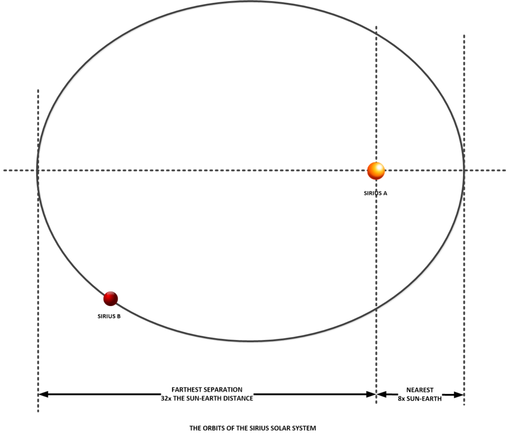
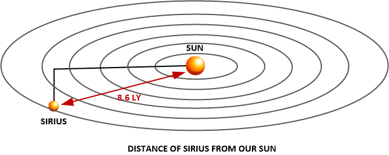
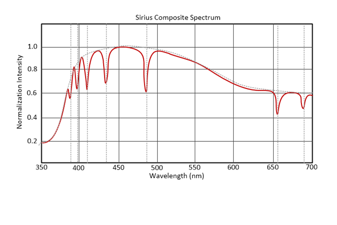
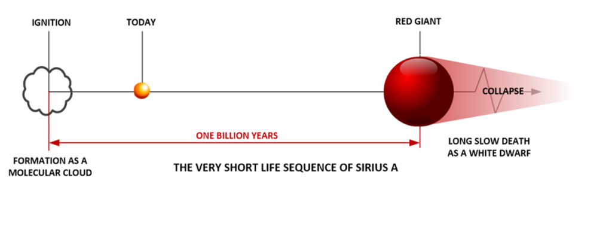
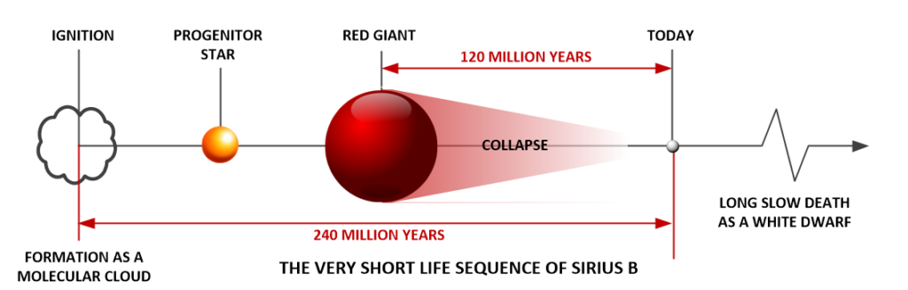
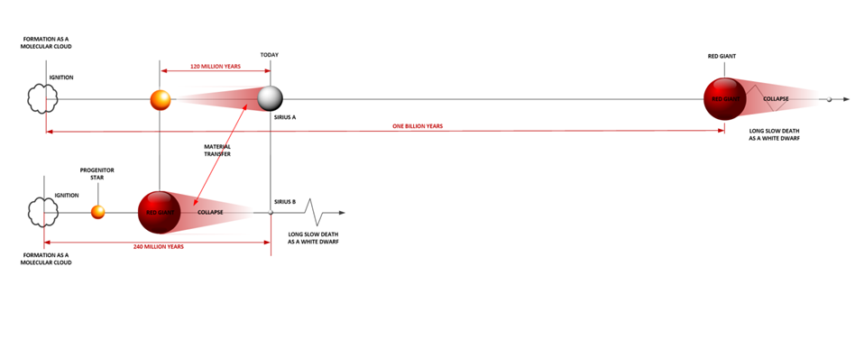
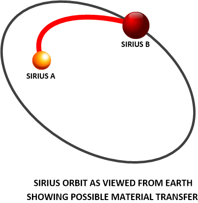
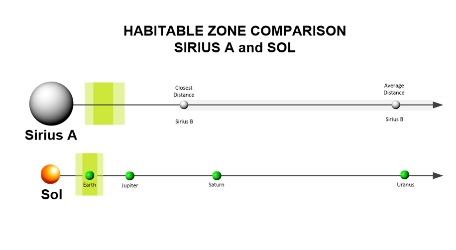
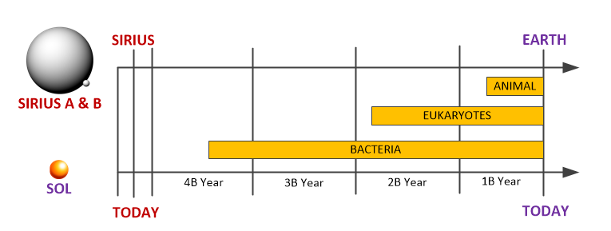

The internet is filled with stories of enlightened beings. Often these beings provide information and advice to selected contactees. They provide instructions on how to live your life in a full and beneficial manner. Often they are said to come from Sirius. Yet, are there really intelligences that live in the Sirius solar system? Let’s take a look at this curious situation.
One of things that we fail to do is look up at the sky at night. It is just an oversight to us. We know there are stars. We know that they inhabit the dark, dark night sky. We know that they are different and look like points of light. However, for most people they are just an uninteresting aspect of the world around us. When finally, we are out at night, and we just happen to look up in the sky, we often don’t see anything. For either the sky is cloudy or the view is obscured by nearby lights (as is the case in all cities). We never see the stars that we read about.
The largest and brightest star is Sirius. As such, it has obtained near mythical significance. Today, if you surf the Internet you can run across all kinds of articles on this fabulous star. Many are filled with glowing stories of great-enlightened beings, while others are dry tomes listing raw astronomical data. No one has ever tried to personalize this star. This article is my lonely attempt to do so…
Some Basics
Sirius is the colloquial name for a solar system that is visible from our planet. It is a binary system, which means that it is really two stars. It is close to us, so we can see it pretty well. One of the stars is very large, so it is unusually bright.
In the world of astronomy, the largest star is given the Bayer designation of Alpha Canis Majoris (α CMa). It is often referred to as Sirius A. It has companion star that is much, much smaller (and dimmer) that is called Sirius B. They are pretty close together. Sirius B orbits around Sirius A in an elliptical orbit.

One easy way to measure distance is by comparison. (As is the most common method used by humans to learn about our surroundings.) We can compare the distances in the Sirius system with the distance of our planet Earth from our sun. That distance is known as one AU. This is one “unit” of distance. Since we are talking about astronomical issues here, it is one “Astronomical Unit” or 1 A.U..
Thus, when the Sirius binary pair is closest together (known as the perihelion) they are 8.2 AU apart. This is around the distance that Saturn is from our sun (9.58 AU on average). At the farthest point, they are apart by 31.5 AU. (This is known as the aphelion.) This distance is about the distance of Pluto. (Typically this is a distance of 27.9 AU at the closest approach.) The pair rotates about each other with a period of around 50 years.
In general this orbits of this pair lie on a two dimensional plane. That plane is at an angle to us. Therefore, to us, it seems that the stars are moving towards us and then moving away from us. We cannot see the visual paths clearly. They need to be mapped out over a fifty-year span.
Distance
The Sirius system might be the most visible and the brightest, but it is not the closest star to us. There are other stars such as the nearest system; Alpha Centauri. There are also a number of some small dim “Red Dwarf: stars as well.
Because stellar distances are so large, we don’t measure them using AU. If we did, the values would be too large to be meaningful. (How many cups of water are in the Pacific ocean? I don’t know. Does it even matter?) We measure them using LY. This means “Light Year” and it is a measure of the distance light travels in physical space. As such the Sirius system is approximately 8.6 LY from us.

Star Classifications
All stars are classified by what we can measure. Since we are way out here on Earth, it is pretty darn difficult to know much about stars. The only way that we can learn about these objects is to observe them and compare our observations with other things. For the most part, we can classify stars from the light that we observe. This is because the type of light we see can be broken down into its spectra. (Think about a glass prism and how it takes light and breaks it down into a rainbow.) From these spectra we can determine what materials the star is made out of and exactly how hot it burns.

Over the years, we have identified patterns within the stars. We know how they are born. We know how they age, and we know how they die. Depending on how they are born, they can become just absolutely huge stars, or tiny hardly visible stars. In general, stars are born from gas. At some point in time, the gas ignites and a star is born. Over time, the fire burns and burns until all the gas is used up. Then the star dies a slow, long and cold death.
This is a simple pattern, and it works for the vast majority of stars. However, there are many exceptions to this rule. It depends on many factors. Some stars are too large initially, and burn too hotly, and too brightly, and too fast. They die out really quickly. Some stars burn up and move into a kind of “fatso phase”. There they get really large and huge. Sometimes they explode. Other times they simply chill out and die.
Further complicating this process is how the stars relate to other stars. Some stars feed off other stars, and steal their gas. The point being that stars age, just like people do. They grow up, they become mature, and then they die. What we observe depends on the age of the star (and solar system) that we are observing.
Today, when we look at the Sirius solar system, we see two stars. The largest, Sirius A is classified as a “white main-sequence star of spectral type A1V”. The much smaller star, Sirius B, is classified as a “faint white dwarf companion of spectral type DA2”.
About Sirius A
Sirius A is a “main-sequence” star. This means that the star looks like it fits within a typical stellar aging process. The reader should not get confused. Just because a person looks happy, doesn’t mean that they have a good home life. The same is true with stars. Many stars go through many changes and disruptions before they enter the “main sequence”.
Today Sirius A is a hot, big star of “early” A with a surface temperature of 9,950K. It burns bright and hot. Due to its enormous size, it is a very visible and noticeable star.
It is also very young. We have estimated it to be only 240 Million years old. In the world of astronomy, this isn’t just a baby. It is a newborn infant. We know, from studies and computer models that the star grew from a huge molecular cloud. When it was about 10 million years old, it began to run self-sustaining nuclear reactions and thus ignited and became what we see today. However, evidence suggests that there is a distinct possibility that it could have been different in size, shape and appearance.
We are able to predict what will happen to this young’un. We have predicted this based on observations of other similar stars. After a billion years it will get enormously fat (as what happens when it runs out of hydrogen) and become a “red giant”. Then, it will slowly die and become a tiny little dim white dwarf. This means that the star will be very short lived. Our own star is over four billion years old, and it is just reaching stellar adulthood. The most numerous stars, the cooler ones, live for many billions of years.

About Sirius B
Sirius B is a “white dwarf”. It is tiny, and very very hot. As far as white dwarfs go, it is considered to be on the heavy side. As far as I know, it is one of the most massive white dwarfs ever found. It is tiny but compact. It is about the same size as the earth, but has the mass of our sun. It is also mind boggling hot. At 25,000 K it is almost three times hotter than Sirius A, and 4.3x times the temperature of our own sun.
It is important to note that as a white dwarf is very hot when it forms, because it has no source of energy, it will gradually radiate its energy and cool down. Eventually it will become very cold over the great gulfs of time.
We do know a little about this star as well.
We know that it is about 240 million years old. It is the same age as Sirius A. It too is awfully youthful. We know that when it was younger, it was much larger than it is today. In fact, we estimate it to have been five times larger by mass. We know that about 120 million years ago it exited the “main sequence”, and became very large and entered the “red giant” evolutionary stage. Then it collapsed to the star that we see today. It will eventually die a long cold death many billions of years in the future.

Aptian Extinction Event
Since the Sirius solar system is very youthful, compared to our solar system, being only 250 million years old, and the time when Sirius B turned into a “red giant” is estimated to have occurred 125 million years ago, we can make a conjecture that there MIGHT be an extinction event that would be a direct result of this time period. After all, the Sirius solar system is very close to us. It is only 8.2 LY from us.
That would be sometime around the Mesozoic Period (250 Ma). Also around this time, but about 100 million years later, is the second best candidate for the effects of a nearby stellar event is the Aptian extinction event. (Given the vast gulfs of time, it is immensely difficult to ascribe a date to this event.)
The Aptian extinction was an extinction event of the early Cretaceous Period. It is dated to c. 116 or 117 million years ago, in the middle of the Aptian stage of the geological time scale. This event has sometimes been termed the mid-Aptian extinction event as a result. It is classified as a minor extinction event. This is different than a major event like the famous Cretaceous–Paleogene extinction event (that brought about the end of the “age of dinosaurs” and the Mesozoic Era). Officially, no one knows what caused it, and numerous theories have been present, but none of them have been generally accepted by the majority (of the scientific establishment.)
The Aptian event is most readily detected among marine rather than terrestrial fossil deposits. In this event, large numbers of shellfish and marine creatures died due to inadequately explained events. That is pretty strange. As it suggests that something affected the oceans in such a way as to cause mass extinctions. Perhaps it was a rising of ocean temperature. But, who really knows?
Thus, perhaps the stellar changes in the Sirius solar system 125 million years ago can help shed some light on this mystery.
The Life Sequence of the Sirius System
Knowing what we know, we can piece together the known history of the Sirius solar system. We can see that it is a very young system that grew too big very early on. We can see that both stars interacted and continue to interact with each other in a dynamic manner. Finally, we can see that in the past there has been material transfer of gasses from one star to the other due to the orbital proximity of each other.

The Period of Transformation
A very interesting aside is that when the star was in its “red giant” phase it could have very possibly transferred some of its mass to Sirius A. The problem is that we don’t know for sure, and can’t possibly tell from observation after the fact. However, it is probable that when the Sirius B (as a “red giant”) approached Sirius A, streams of hot gasses would move from it to be absorbed into Sirius A.
This means that when Sirius B blew up to the size of a gigantic star, it lost its mass through cannibalization to Sirius A. These transfers of gasses made Sirius B smaller, and made Sirius A larger. This would occur sometime from 120 million years to (maybe) a few thousand years in our past. We just don’t know when the gas transfer ended.
When Sirius B was a “red giant” it blew up to an enormous size. How big is up to speculation.
We typically believe that our sun will enter the “red giant” phase having a diameter of 1 to 3 AU. We know that the progenitor star for Sirius B was five times larger than our sun. Thus, it is quite possible that the “red giant” version of Sirius B could be from 5 AU to 15 AU in diameter. (Multiply by five.)
We know that at the perihelion (a distance of 8.2 AU) where Sirius B is closest. Therefore it is very possible that both stars touched each other when close. If is also possible that large streams of gasses moved from Sirius B to Sirius A during long portions of the orbit.

This would be an impressive sight to behold. Firstly because, as viewed from the earth, it would be quite bright and very visible. While today we can’t see Sirius B, as a “red giant” it would be very visible a few million years ago. It would also be impressive. Ancients who viewed the star could see it changing within their lifetime. The orbital period is 50 years after all. They could actually see the light waxing and waning. They might even be able to see the streams of gasses to their naked eyes. After all, the sky at night was (we suppose) much darker then.
About those Ancients…
Everyone knows… Ah yes, everyone knows that historical records only go back 6,000 years or so. Yet, we have found remains of implements dating as far back as 300,000 years ago. However, there are those that refuse to accept that as a factual possibility. I would hazard a guess that human kind is far, far older than we are led to believe.
Nevertheless, is the human race millions of years old? Wow, that is quite a stretch. Isn’t it?
Well, we do not know when the transfer of gasses ended. It is very possible that they might have ended mere seconds before the invention of the telescope. Why not? If so, then ancient man could have actually watched the heavens and saw the strange behaviors of the Sirius system. And if so, could they not have recorded it in their customs and passed the information down, generation by generation?
Maybe so…
Enter the Dogon Tribe
The Dogon are a tribe of Africans that have a culture that worships the orbits and behaviors of the Sirius system. A number of books have come out and describes this interaction in detail. The key points of interest are that they knew that the Sirius system was a binary system. They knew the orbital behavior, and seemingly witnessed the exchange of gasses during the “red giant” phase of Sirius B. It seems impossible because “everyone knows” these natives are “primitive”.
“The Dogon tribe of West Africa believes that the starting point of creation is a star that revolves around Sirius and is known as the 'Digitaria star'. Their understanding is that this star is small, but heavy, and contains the building elements of creation." Two French anthropologists Marcel Griaule and Germaine Dieterlen studied the Dogon tribe that live in an isolated mountainous region of Bandiagara, south of the Sahara Desert in Mali, West Africa. Mr. Griaule wrote about their discoveries of the Dogon tribe in his book, "Conversations with Ogotemmeli", published in 1947.” - The Dogon Tribe Of Mali West Africa,The Nommos and The Sirius Stars
Today, Sirius B is too small and tiny to see with the naked eye. However, if it were a “red giant”, it most certainly would have been visible.
The studied customs and traditions seem to indicate that the Dogon witnessed and recorded in their culture the behavior of the Sirius system. In fact, it appears that their traditions record the orbital interplay during the gas exchange phase after Sirius B became a “red giant”. It seems impossible as that phase began 240 million years ago.
Of course the believers of the stable, unchanging universe, have “proven” that this possibly cannot have occurred. I like to call these people “defenders of the changeless” or statists. (Not to be confused with Ayn Rand’s definition.) They have even made money writing books on it. From my point of view it all seems just more than a little bit silly. Observations were made at the dawn of humanity describing astronomical events that could have certainly been visible from earth. The only opposition to this fact are the statists that refuse to revise their tidy understanding of history.
My definition of scientific statism;
A concentration of a set scientific theory in the hands of a closed elite group of people. Often they have direct ties to a highly centralized government. To alter or change that theory to revise it to meet new discoveries or data often requires government derived politics and peer-group approvals.
Statists, Revisionists, and Cultists… Oh my!
Sometimes I just want to hit a statist on the head and tell them that what we observe now is NOT how things have always been. The physical world is dynamic. That means it changes. What is not visible today could have been highly visible in the past.
Aside from statists, there are also revisionists who look for excuses to justify everything that does not fit nicely in the preferred historical narrative. They search for alternative explanations for these nasty elements of confusion. Because of the Dogon and their culture, many believe that it is proof that earth was visited in the past by extraterrestrials from Sirius. As a result, some of the more inspired members take what they know and run rampant with it. As a result many believe all kinds of things in regard to this. Now you know, there is nothing wrong in searching for alternative explanations. I only posit the most likely one as I see it.
Along with the statist historians, and revisionists, are the “new age” cultists whom associate everything with the spiritual realm. Again, there is nothing wrong with that either. I myself strongly believe in intelligences that are beyond human understanding. However, that does not necessarily mean that they come from Sirius. Sirius is a physical system that is very hot, young and inherently hostile. It is bright and visible in the night sky, but being obvious does not make it compatible with biological life. To understand what I mean, we must first do what humans do best. We compare things.
Comparative Ages
Let’s compare the Sirius solar system with our own solar system. We need to do that because that is the only solar system that we have studied in detail. As such, it is reasonable to assume that there are degrees of similarity between the Sirius system and our own solar system. Based on the similarities, we can make reasonable conclusions regarding the physical environment around Sirius. We call the base of our comparative endeavors the “Earth Model”.
According to the Earth model a solar system has to be a minimum of 2.5 Billion years old to have any planets that might house an oxygen based atmosphere. Further, to expect to have native flora and fauna traipsing about on any planet in the system, it needs to be at least (bare minimum) 4.5 Billion years old. Our planet was nearly 5 Billion years old when man started to think and hunt.
The needs to understand that the (so called) “Earth-model” is but an assumption. It is based on the idea, theory, or even statement that the development of life on our planet earth is typical in this universe. This model establishes that life begins when situations and conditions are ripe for it to occur. According to the model, life on a planet orbiting Sirius would begin approximately at the same period in time as when it occurred on the earth.
Sirius is Youthful
We know, through our investigations on earth, at what ages that life developed around our star. We know what the environment was within our solar system at different times. We know what happens to planets within our solar system over the years, and the migratory forces that create a dynamic environment that advances (and stunts) biological growth. We know all this because our solar system is over 4.5 billion years old. While the Sirius solar system is only 25% of a billion years old. It is a mere infant compared to our solar system.
Let’s compare what we know about our solar system with that of the Sirius solar system.
Development of planets
We know that planets formed at about the same time that the sun ignited. Although those planets were not really what we would consider to be hard, solid planets. They were more like hot molten masses of dirt, metals and rock. We also know that they took a while to cool down. The first shape of the molten earth occurred during the Hadean Eon, and as the earth cooled down, about one billion years later, it entered the more stable Archean Eon.
The Hadean Eon is so named because earth at that time looked like the Biblical version of Hell. It was hot, molten, gaseous, rocky, dirty and full of fire and brimstone. Hey guys, that’s what the Sirius system looks like today.
The Hadean Eon lasted from stellar ignition until around one billion years of age. Since we know that the Sirius system is only a mere 250 million years old, it goes to understand that any existing planets in the system would be very primitive. We do know that during this period the earth was hot and still in formation. Water just began to form around 125 million years, and the very first hardy microbes began to form around 250 million years. These were simple single celled organisms of the most primitive sort.
What this means is that if the Sirius solar system followed the same evolutionary model as our solar system that any planets there today would be near molten, hot and quite inhospitable. Water might just now be forming in the atmosphere. It might be in the form of steam, or in the form of ice crystals. In any event, due to the temperatures and pressures on the surface, it is highly unlikely that any life aside from microbes would exist.
Development of life on planets
We do know that on the earth, microbes have been found from the early Hadean Eon. The earliest are simple single cell organisms that somehow managed to develop on the hot molten and crusty surfaces when the earth was about 250 million years old. We know that this was after around 125 million years of water formation. The water was certainly present in various states. I tend to believe that the microbial life began when the water was in a liquid state, but that is just my own personal belief.
If there is any native life in the Sirius solar system, it would most certainly be microbial. It would be of simple construction and probably located in isolated regions on any planet that could possibly have free standing water.
Frequency of extraterrestrial bombardment
We know in our solar system that the formation of it was not pristine. That is to say that during the formation of the solar system from the initial debris disc that all kinds of planetary bodies formed. These bodies varied from large gas giants, to rocky planets, to small planetoids, to even smaller asteroids, and ice bearing comets. We also know that over the years, these bodies would slam into our planet.
Initially, especially during the Hadean Eon, the bombardment was quite excessive. Over the years it tapered off and dissipated. There is evidence that over time that the impacts seriously affected the development of life on our planet. When life eventually recovered, it was stronger and more adaptable.
However, the key point in regards to this is a measure of the planetary bombardment and how effective is the migration and evolution of the binary solar system affected the orbits of other planetary bodies. Were they absorbed by the orbital companion star or were they trapped into small close spiraling orbits that negatively influenced planetary development? We don’t know. Speculations on this are of most curious concern. However, the fact is this; any planetary bombardment during a Sirius-style Hadean Eon would be of moderate influence.
Migration of planets
This will probably anger the statists, but it is true. Things change. They really do.
This is true for people. This is true for houses. This is true for nations. This is true for animals over the ages (a nod to Darwin). This is true for fashions. This is true for relationships (a nod to Elizabeth Taylor). This is also true for solar systems.
Immanuel Velikovsky wrote the book “Worlds in Collision” in 1950 and was immediately ridiculed by the statists in power of our educational and government institutions. While there might be some debate on some of his examples and more radical ideas, the concept is quite sound. Planets migrate over time. As they migrate they are influenced by the gravitational orbits of other planets and this causes all sorts of changes to the solar system composition.
We know that in our solar system that the larger gas giants migrated outward from the sun. We know that the tilt of planetary bodies change over time. We know that there are asteroids that orbit in all kinds of orbits in our solar system, and that they often influence other planetary bodies. In fact we even witnessed an impact on Jupiter, which was quite spectacular.
We can’t possibly know what the migration of planets would be around Sirius; however we do know that that Sirius B already went through a huge “red giant” phase. This phase would have certainly “cleaned up” the environment around that star. We can also presuppose a high probability that the orbit around Sirius A was enough to shepherd, if not complete eviscerate, whatever hot molten planets orbited Sirius A.
It is quite reasonable to expect that the planetary changes and migrations over the last 250 million years in the Sirius system seriously altered the development of planetary bodies in that system.
It is my personal belief that this system has no planetary bodies of any importance. Any planetary bodies are probably small rocky frozen masses in the Oort cloud of the Sirius system. Closer bodies, independent of size, were hot and inhospitable. They might have showed promise, but the rapid growth and changes in Sirius B most certainly caused them to be absorbed into the corona of either Sirius B or Sirius A.
Habitable Zone around Sirius A
Is there a zone where human habitable planets could exist around Sirius A? Yes. But the reality is that there probably wouldn’t be any planets in that zone that would be inhabitable. It is my guess is that the odds are zero to unlikely. There are, I believe, no planets in the system that would be deemed habitable by ambulatory humanoids such as humans are today.
With an age of 250 million years, the reader must realize that Sirius is still a very young star, but this time would have been more than sufficient for terrestrial planets to begin form. Those who still hang on to the belief that there are indigenous intelligent creatures in this system would be welcomed by the knowledge that Sirius has a very wide and broad habitable zone. Due to its enormous brightness, the habitable zone of Sirius would be very broad, ranging from 2 AU to about 5 AU. So Sirius might be orbited by three or even four (potentially) habitable worlds. Of course, the term habitability might (at best) mean (imported, not evolved) creatures. It is unlikely to have complex (indigenous) vertebrates.
So theoretically, the potential habitable zone might look something like this;

Of course, it assumes many things. It assumes a statist, non-changing reality. It assumes no gravitational influences on either star. It also assumes water and a nitrogen and oxygen environment on a planet, which we know is not possible during the first billion years of existence.
Any potentially habitable planet of Sirius would have to be a very hot and young world, covered by warm, shallow oceans. It would be scarred, rocky and suffering from tidal effects and the intense radiation of the primary star. If any continents could have formed already, they would be small, (comparatively) un-eroded and volcanic. The planet would have to be shielded by a thick and very humid atmosphere, and this entire scene would be dominated by a bright, violent sun. At the bottom of the oceans, protected from the sterilizing ultraviolet light, simple forms of bacterial life may find their niche, nourished by hydrothermal vents from the planet’s interior. Any future explorers to this world should not forget their Sirius glasses, because the radiation from the star is relentless.
Any kind of life on our (hopeful) model planet will die before it ever had a chance to grow. Sirius will leave the main sequence in only 700 million years at best, destroying all the planets it may have. For this reason, stars of type A are routinely excluded from the search for extraterrestrial life.
Comparison with the Earth Model
There are those who talk about habitable planets around (or even on) Sirius. Yup, they really do. They discuss these things with great passion and authority. However, it is all nonsense. At best, the Sirius solar system is a hot inhospitable place, suitable only for the hardiest primitive organizations that somehow managed to grow on some free standing water attached to a passing comet or body in the Sirius Oort Cloud. Which, I must add, is pretty darn unlikely. (You think Pluto is cold? You ain’t seen nothing yet.)
It takes time to develop and evolve physical life. We can simply look at how life developed on the earth to see this. A simple comparison tells us that the Sirius solar system is today a much more dangerous and energetic system than earth in the Hadean Eon. This can be interpreted as very hostile to biological physical life today.

If you compare that it took around four billion years to develop native life on earth, that it is pretty unlikely that life developed around Sirius. Really. It should be pretty clear by looking at how life developed on our planet that the idea that life has developed independently around Sirius is pretty unlikely.
This is in regards to what we know through observation. This assessment is based on other factors, and does not include our feelings on this matter. Certainly this universe is a large place. Anything is possible. However, from what we can observe, this system is very young and quite dangerous.
There are no physical white robed intelligences that migrate to the earth and teach us the “wisdom of the ancients”.
Contrary Views
Of course, these are only my opinions. I have never been to the Sirius solar system. I have never met anyone who claimed to be from that system. I have never “felt” that someone from that system was trying to contact me. That means nothing.
There are others who say otherwise.
Here are some examples of the various people who claim that intelligences in various forms live in and around the Sirius solar system. They also almost universally claim that these intelligences interact with humans on earth. I find their claims fantastical, as I have absolutely no experiences that validate their statements.
“The planet Xylanthia is located in the Sirius Star System, which is comprised of three stars; Sirius A, B and C. Sirius A and B orbit around Sirius C. Planet Xylanthia orbits around Sirius C, which is a black dwarf star. Xylanthia is the home-planet of the extraterrestrials that visited Earth and founded Atlantis.” - http://xylanthia.com/
Many people associated with UFO and extraterrestrial contact experiences claim that many of the extraterrestrials came from this solar system. They are, of course, wrong.
In a like way, the Dogon in Mali, the so called “Nordics” and other races associated with abduction phenomena claim that this system is a major origination point. That is absolutely false.
This region is among the most toxic to biological life in our neighborhood. As a nod to those whom make these claims; any extraterrestrials who come from this solar system can only do so at a much higher (potential) energy state of density and vibration.
In general, anyone who states that they (as a wholly physical biological entity) came from a habitable planet around Sirius is telling a falsehood. It is extremely unlikely that this statement is true.
While I, for one, do not believe that there are any indigenous life forms in this system. However, there are many who actually believe that this is the case. Since, I have never been to the Sirius system, nor have I ever been outside our solar system, I can’t validate or discredit their belief structures. Therefore, I present what I have learned through the Internet, in context with what I currently know, for your own investigative pleasures, and possible humor.
Here I present some well-known extraterrestrial lore concerning the (so called) “Sirians”. While I cannot confirm, nor deny their statements, I do NOT believe them. I do not believe them at all. I have many reasons for this, but primarily because I am highly skeptical of the evolution of native life in the region around the Sirius solar system.
Alex Collier
According to Alex Collier (a very well-known author who writes about extraterrestrials, visitations and abductions), there are a number of human looking extraterrestrials from Sirius B. Alex Collier describes extraterrestrials from Sirius B as follows:
“The cultures around Sirius B have a very controlling vibration. Some of the humans are red, beige and black-skinned. The planets around Sirius B are very arid and generally occupied by reptilian and aquatic-type beings… The society is more obsessed with political thought patterns instead of spiritual attributes. “ -Alex Collier
Alex Collier explains the role of this group of extraterrestrials in technology exchanges with national security agencies:
“Those from Sirius B have come here and really messed with our heads, and they are the ones who originally gave our government the Montauk technology.” -Alex Collier
While I cannot vouch for anything related to “Montauk technology”, whatever the fuck that is, I can positively state that ABSOLUTELY no intelligences provided technology to MAJestic outside of the “core group”. Anything outside of this was either derived through reverse engineering, or developed independently.
Anyways, this “exotic technology” was provided for the purpose of encouraging national security agencies to develop offensive military capabilities vis-à-vis possible extraterrestrial threats. This technological assistance even involved biological weapons research according to Collier who claims:
“The biological material that has been added to the Ebola [virus] was given to the government by the humanoids from Sirius B. I don't know if was one of their viruses that they picked up somewhere or whether it is actually from them.” -Alex Collier
Personally, I think that this is all nonsense. I think ol’ Alex has a great thing going with his books, lectures and writings. It’s a nice income stream. I respect that. I should have set something up like he did. Maybe I would get a large following and have numerous books to my name. Maybe.
Yeah. I most certainly need that. That is for sure. Living off Social Security sucks when you have no pensions or 401(K)’s.
Sorry, I gave up making a lot of money when I joined MAJestic. None of us are paid well. We are left to our own designs to scramble for money like every other smuck in this world.
Paul McCarthy
Paul McCarthy, Channel for the evolved Star Beings and the leading Star Seed Teacher, offers classes to teach everyone about the wonderful “Star Beings” that surround us. He has some ideas about the “inhabitants” of Sirius;
“The Sirians are another wonderful civilization of christed ETs. They are more advanced in the metaphysical sense as Sirius is one of the more advanced training centers or universities to which the Ascended Masters travel. Sirius has a direct link with our solar system and the Sirians have been amongst us since the time of the Mayan and Egyptian civilizations. They gave the Egyptians much advanced astronomical and medical information and also gave the Mayan race advanced knowledge. They helped the Earth during the time of the cataclysmic period in Atlantis. Sirius is a star system which is a meeting place for Earth beings who wish to continue their spiritual studies The Sirians helped to build the Pyramids and temples of Egypt and they are involved with helping Earth into this new Golden age. -Paul McCarthy
I do believe in non-physical entities that reside within the non-physical realities. However, the odds that they cluster around the Sirius system is remote. Me thinks he too, like Alex, are just milking a system for profit.
Preston Nichols
Preston Nichols claims to be a ‘whistleblower’ who participated in a clandestine project at Montauk that involved a number of extraterrestrial groups. (Everyone is talking about the “Montauk” experiments and such. It’s all nonsense. All technical work related to extraterrestrials and MWI are focused in geographical areas in Ohio, California, Kansas, and some others.)
A (so called, and yet unidentified) “independent investigator” found Nichols “to be a very reliable and solid witness and that for myself, his information checked out across the board–right down the line; to the extent that it was at all possible to verify particular information.”
The humans from Sirius B, according Nichols, played a role in providing exotic technology such as time/inter-dimensional travel to clandestine government agencies involved in both the Philadelphia Experiment and Montauk Project.
Again, I know nothing about this.
Steve Beckow
What can I say? This introduction says it all;
“Steve is apparently from Arcturus and has lived on Earth eight times: as a non-dual monk in Atlantis, a community leader in Biblical times, a formulator of mathematical principles and sacred geometry, a warrior, the founder of a religious order, and a helper in the development and spread of the printing press. This lifetime he works as a communicator serving Archangel Michael and the Divine Mother.”
From one of his aligned websites;
“As the Pleiadians, the Sirians are part of the alien-cultures who assist Earth and all her inhabitants (Humans, Animals and Nature). Sirians are spiritual warriors, and strong connected to life-forms of dolphins and whales. Lot of people feel familiar with these life-forms, because they lived in those forms as well, and perceive those entities as loving friends.” - Steve Beckow
Pretty cool stuff. Hey, can I wear “love beads”, smoke some of that marijuana, and have free sex with tattooed girls in dreadlocks as well?
Daniel Salter
According to Daniel Salter another “whistleblower” with long military service which included a period in the National Reconnaissance Office, extraterrestrial related issues drive human-extraterrestrial cooperation in a clandestine organization in the National Security Agency called the Advanced Contact Intelligence Organization (ACIO).
According to leaked information from an alleged whistleblower on a website called the Wingmakers, information which Daniel Salter affirms to be accurate, ACIO is cooperating with a consortium of extraterrestrials to develop sophisticated time travel technologies for future extraterrestrial threats.
According to the Wingmakers website:
“Blank Slate Technology or BST … is a form of time travel that enables the re-write of history at what are called intervention points. Intervention points are the causal energy centers that create a major event like the break-up of the Soviet Union or the NASA space program. BST is the most advanced technology and clearly anyone who is in possession of BST, can defend themselves against any aggressor. It is, as Fifteen [leader of the Labyrinth] was fond of saying, the freedom key. Remember that the ACIO was the primary interface with extraterrestrial technologies and how to adapt them into mainstream society as well as military applications. We were exposed to extraterrestrials and knew of their agenda. Some of these extraterrestrials scared the hell out of the ACIO. “ -Wingmakers Website
According to this source, it is likely that this consortium of extraterrestrials includes those from Sirius B who allegedly provided some time travel/inter-dimensional travel technology for the Montauk Project, and assistance in researching biological weapons.
According to Daniel Salter , the Sirians do not appear to be closely connected to the Gray or Reptilian groups that have been the main extraterrestrial groups involved in technology transfers. The Sirian interaction with the shadow government appears to have been an independent initiative designed to provide an alternative source of extraterrestrial technology.
Ugh. What can I say? It’s nonsense like this that give actual agents bad names. You know, everyone has an “angle”. Everyone is trying to scrape some of that ash to put in their wallet. Everyone is trying to snare some pretty girl or two or directionless groupie. I understand and respect that.
However, it is easy to be led astray when all you see is either the statist viewpoint or the more incredulous fantasies of these individuals on the periphery.
My Opinions
From the point of view of an “extraterrestrial enthusiast”; Sirius has merits. For one, [1] Sirius is a great name. It is short and simple. It is easy to remember. It’s got a rememberable “ring” to it.
Not only that, but [2] it is visible in the night sky. People can see it. It is tangible. It is something that someone can point to, and look at. It is also predominant in the night sky of the Northern hemisphere on earth. (This is where most of the largest human cities lie.) [3] Other people have heard the name before. It is vaguely familiar. It is comfortable, and convenient. It is thus, no wonder why many people choose this as a source of origin for extraterrestrial races.
However, I personally think that many people who believe in physical intelligent beings from the Sirius system are more than just a little bit confused.
This is a big universe. It has elements of both the physical and the non-physical in it. It could very well be possible that some of these individuals were confusing physical contact with non-physical events. This is because there are certainly many things that we humans cannot perceive.
Additionally, there are those whom try to profit from other people’s belief structures. They offer promises and hope to people in need for it. These searchers and dreamers are easy prey to those with a good story and an open pocketbook. I think that it is horrible that someone would try to fleece the needy, the weak, the troubled and the hurt. They need to be offered real hope, not some lie no matter how interesting it sounds.
Sirius is a very interesting solar system. Its close proximity to our planet has had an influence. The extent of that influence is up to debate. However, I dare say, it is unlikely one involving intelligent extraterrestrial guidance.
Take Aways
- Sirius is a nearby solar system, not a planet.
- The Sirius that we see today is a very young and hot, and dangerous place.
- Sirius went through massive changes 125 million years ago.
- These changes were visible from earth.
- Primitive humans could have witnessed the Sirius changes.
- It is unlikely that native extraterrestrial life exists in the Sirius solar system.
- There are people who claim that the Sirius system is inhabited.
- These inhabitants are claimed to influence human behaviors.
- I am skeptical of these claims.
RFH
How about a Request For Help? I tire of busybodies and statists who poke fun at the ideas and theories of others. They offer no constructive dialog. Rather they just make fun, ridicule, and then scurry under a rock.
I use this forum as a way to disseminate some of the things that I learned though my thirty years of involvement in MAJestic. However, I am forbidden to posit my knowledge directly. I cannot tell the interested, the “secrets of the universe”. The best that I can do is share my opinions about things that interest me, and flavor it indirectly with my forbidden understandings.
To help put this in perspective, put yourself in my shoes…
Imagine that you are working at a company with a brutal NDR. You cannot divulge anything about what you are involved in for any reason. Now, let’s suppose that for thirty years you were involved in training unicorns to dance with bigfoot. To help with your training, the Lock Ness Monster would gather “magical beans” that you would award the unicorns when they did a particularly impressive dance move; like the cha cha or a nice rendition of the samba. Now, there is no way that you can talk about unicorns, bigfoot, or the Lock Ness Monster. But, the NDR doesn’t cover “magic beans”. So in the best interests of society, you might want to posit your thoughts about growing “magic beans” and how they might be of interest to imaginary creatures. That is the situation that I find myself in.
So, if you, the reader, were so interested, I would welcome your thoughts on the Sirius solar system. I would welcome your comparisions to other stars in the early stages of life. I would welcome your thoughts on the presence or lack of debris discs. I would be very interested in your thoughts about the Dogon Tribe. Do you have any thoughts to contribute?
This is my callout, to you the reader, to assist all of us in solving these mysteries. After all, this is a far better use of the internet than for looking at Justin Bieber videos.
FAQ
Q: Who are the Sirians?
A: They are the supposed inhabitants of worlds in orbit around the stars of the Sirius solar system. They are typically considered to be carnate beings, though some insist that they are incarnate creatures.
Q: Who are the bright enlightened beings?
A: I do not know. I have never met any.
Q: Does Sirius have intelligent people or civilizations?
A: Probably not.
Q: Why do the Dogon worship Sirius?
A: They have a history and traditions that appear to describe the behavior of Sirius when Sirius B entered the red giant phase. If their ancestors witnessed this event then that tells us that we need to take a serious relook at the history of mankind (personkind for you Progressives out there).
Q: Is there a habitable zone around Sirius?
A: There is a habitable zone around both Sirius A and Sirius B. However, it is unlikely that any habitable planet would exist within that zone given what we know about the system.
Q: Are the reptilians from Sirius?
A: It is unlikely.
Q: Are the Nordics from Sirius?
A: It is unlikely.
Q: Do the Zeta Reticuli aliens travel to Sirius?
A: I do not know, though I think that it would be a dangerous trip.
Q: Are All Aliens Enlightened Benevolent Beings?
A: No. Every specie has their own interests and ways of obtaining their needs and desires.
Q: Where are we, as humans, heading as a species?
A: This is a very good question. We are being cultivated. Cultivation is not a bad thing. Cultivation is a sort of rearranging of the stuff that comprises our souls. I have other posts on this subject that covers this issue in great detail.
MAJestic Related Posts – Training
These are posts and articles that revolve around how I was recruited for MAJestic and my training. Also discussed is the nature of secret programs. I really do not know why the organization was kept so secret. It really wasn’t because of any kind of military concern, and the technologies were way too involved for any kind of information transfer. The only conclusion that I can come to is that we were obligated to maintain secrecy at the behalf of our extraterrestrial benefactors.


MAJestic Related Posts – Our Universe
These particular posts are concerned about the universe that we are all part of. Being entangled as I was, and involved in the crazy things that I was, I was given some insight. This insight wasn’t anything super special. Rather it offered me perception along with advantage. Here, I try to impart some of that knowledge through discussion.
Enjoy.


MAJestic Related Posts – World-Line Travel
These posts are related to “reality slides”. Other more common terms are “world-line travel”, or the MWI. What people fail to grasp is that when a person has the ability to slide into a different reality (pass into a different world-line), they are able to “touch” Heaven to some extent. Here are posts that cover this topic.


John Titor Related Posts
Another person, collectively known by the identity of “John Titor” claimed to utilize world-line (MWI egress) travel to collect artifacts from the past. He is an interesting subject to discuss. Here we have multiple posts in this regard.
They are;